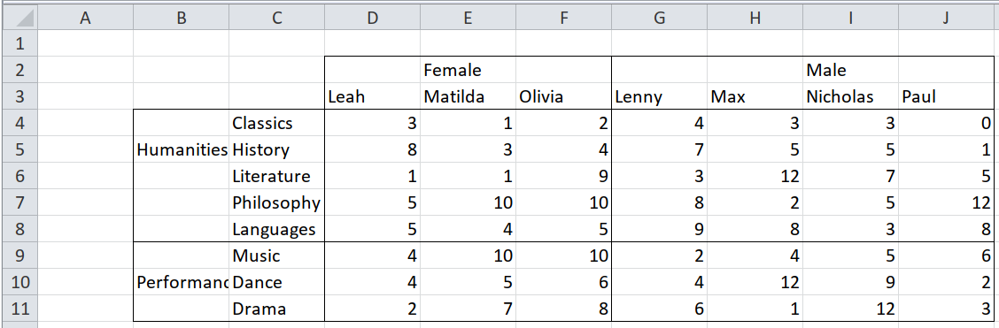
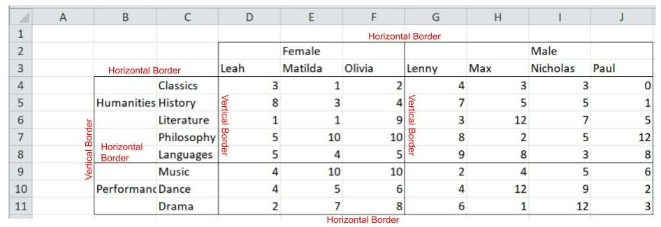
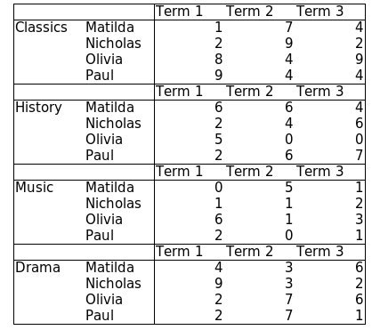
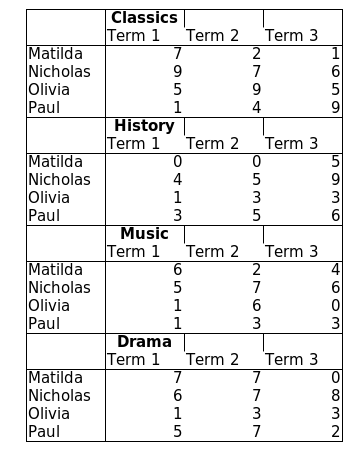

SpreadSheet Munging Strategies in Python - Pivot Tables - Complex Unpivoting#
Pivot Tables - Complex Unpivoting#
updated : September 26, 2024
This is part of a series of blog posts about extracting data from spreadsheets using Python. It is based on the book written by Duncan Garmonsway, which was written primarily for R users. Links to the other posts are on the sidebar.
The key takeaway is this - you understand your data layout; use the tools to achieve your end goal. xlsx_cells offers a way to get the cells in a spreadsheet into individual rows, with some metadata. The final outcome however relies on your understanding of the data layout and its proper application.
We’ve dealt with pivot tables in one of the previous posts. Here, we take the complexity up a notch. Let’s dive in to the various scenarios.
Case 1 : Centre-aligned headers#

In this case, the headers are not aligned completely with the subjects or names. If the data is read into Pandas, columns B and C are set as the index of the dataframe, and a forward/backward fill applied, “Humanities” could be wrongly assigned to “Music” or “Performance” to “ Literature” (“Music” should be paired with “Performance”, while “Humanities” should be paired with “Literature”). Same goes for the header columns - if rows 2 and 3 are read in as header columns, and a forward/backward fill applied, “Female” may be wrongly assigned to “Lenny”, while “Male” could be wrongly assigned to “Olivia”.

The solution is to get the coordinates for the horizontal and vertical borders, and use that to correctly pair the header rows and header columns. We’ll use xlsx_cells function from pyjanitor to get the coordinates - under the hood, it uses openpyxl:
# pip install pyjanitor
import pandas as pd
import janitor as jn
import numpy as np
import sys
print("pandas version: ", pd.__version__)
print("janitor version: ", jn.__version__)
print("python version: ", sys.version)
print("numpy version: ", np.__version__)
pandas version: 2.2.2
janitor version: 0.29.1
python version: 3.10.14 | packaged by conda-forge | (main, Mar 20 2024, 12:51:49) [Clang 16.0.6 ]
numpy version: 2.0.2
excel_file = pd.ExcelFile("Data_files/worked-examples.xlsx")
frame = jn.xlsx_cells(
excel_file,
sheetnames="pivot-centre-aligned",
border=True,
include_blank_cells=False,
)
frame = frame.astype({"row": np.int8, "column": np.int8})
frame.head()
| value | internal_value | coordinate | row | column | data_type | is_date | number_format | border | |
|---|---|---|---|---|---|---|---|---|---|
| 0 | Female | Female | E2 | 2 | 5 | s | False | General | {'left': {'style': None, 'color': None}, 'righ... |
| 1 | Male | Male | I2 | 2 | 9 | s | False | General | {'left': {'style': None, 'color': None}, 'righ... |
| 2 | Leah | Leah | D3 | 3 | 4 | s | False | General | {'left': {'style': 'thin', 'color': None}, 'ri... |
| 3 | Matilda | Matilda | E3 | 3 | 5 | s | False | General | {'left': {'style': None, 'color': None}, 'righ... |
| 4 | Olivia | Olivia | F3 | 3 | 6 | s | False | General | {'left': {'style': None, 'color': None}, 'righ... |
Observations:
The first row is the gender; the next row are the names.
The male and female students are separated by a vertical border. We’ll use the border position to accurately reshape the data.
The first column are the fields; the next column are the subjects.
Just like the gender/names; a border separates the fields, horizontally.
The scores are all integers.
# get the fields
# the very first column
min_col = frame.column.min()
fields = frame.loc[frame.column == min_col, ["value"]]
fields = fields.rename(columns={"value": "field"})
# the horizontal borders to properly pair field and subject
# a good option is the bottom border
booleans = frame.border.str.get("bottom").str.get("style")
rows = frame.loc[booleans.notna(), "row"].array
# align with the first cell per window
# the first subject is one below the border
# hence the +1
rows = np.unique(rows)[: len(fields)] + 1
fields["row"] = rows
subjects = frame.loc[frame.column == (min_col + 1), ["value", "row"]]
subjects = subjects.rename(columns={"value": "subject"})
# merge with fields:
fields_and_subjects = subjects.merge(fields, on="row", how="left").ffill()
fields_and_subjects
| subject | row | field | |
|---|---|---|---|
| 0 | Classics | 4 | Humanities |
| 1 | History | 5 | Humanities |
| 2 | Literature | 6 | Humanities |
| 3 | Philosophy | 7 | Humanities |
| 4 | Languages | 8 | Humanities |
| 5 | Music | 9 | Performance |
| 6 | Dance | 10 | Performance |
| 7 | Drama | 11 | Performance |
# gender is the very first row
min_row = frame.row.min()
gender = frame.loc[frame.row == min_row, ["value"]]
gender = gender.rename(columns={"value": "gender"})
# the vertical borders we are interested in
# are the ones paired with the numbers
# a good option is the left border
border_booleans = frame.border.str.get("left").str.get("style").notna()
number_booleans = frame.data_type.eq("n")
booleans = border_booleans & number_booleans
columns = frame.loc[booleans, "column"].array
# align with the first cell per window
columns = np.unique(columns)[: len(gender)]
gender["column"] = columns
# nemes are the very next row after gender
names = frame.loc[frame.row == (min_row + 1), ["value", "column"]]
names = names.rename(columns={"value": "name"})
# merge with gender
names_and_gender = names.merge(gender, on="column", how="left").ffill()
names
| name | column | |
|---|---|---|
| 2 | Leah | 4 |
| 3 | Matilda | 5 |
| 4 | Olivia | 6 |
| 5 | Lenny | 7 |
| 6 | Max | 8 |
| 7 | Nicholas | 9 |
| 8 | Paul | 10 |
# grab the scores
data = frame.loc[number_booleans, ["value", "row", "column"]]
data = data.rename(columns={"value": "score"})
# merge with fields_and subjects
# merge with names_and_gender
outcome = (
data.merge(fields_and_subjects, on="row", how="left")
.merge(names_and_gender, on="column", how="left")
.loc[:, ["name", "gender", "field", "subject", "score"]]
)
outcome
| name | gender | field | subject | score | |
|---|---|---|---|---|---|
| 0 | Leah | Female | Humanities | Classics | 3 |
| 1 | Matilda | Female | Humanities | Classics | 1 |
| 2 | Olivia | Female | Humanities | Classics | 2 |
| 3 | Lenny | Male | Humanities | Classics | 4 |
| 4 | Max | Male | Humanities | Classics | 3 |
| 5 | Nicholas | Male | Humanities | Classics | 3 |
| 6 | Paul | Male | Humanities | Classics | 0 |
| 7 | Leah | Female | Humanities | History | 8 |
| 8 | Matilda | Female | Humanities | History | 3 |
| 9 | Olivia | Female | Humanities | History | 4 |
| 10 | Lenny | Male | Humanities | History | 7 |
| 11 | Max | Male | Humanities | History | 5 |
| 12 | Nicholas | Male | Humanities | History | 5 |
| 13 | Paul | Male | Humanities | History | 1 |
| 14 | Leah | Female | Humanities | Literature | 1 |
| 15 | Matilda | Female | Humanities | Literature | 1 |
| 16 | Olivia | Female | Humanities | Literature | 9 |
| 17 | Lenny | Male | Humanities | Literature | 3 |
| 18 | Max | Male | Humanities | Literature | 12 |
| 19 | Nicholas | Male | Humanities | Literature | 7 |
| 20 | Paul | Male | Humanities | Literature | 5 |
| 21 | Leah | Female | Humanities | Philosophy | 5 |
| 22 | Matilda | Female | Humanities | Philosophy | 10 |
| 23 | Olivia | Female | Humanities | Philosophy | 10 |
| 24 | Lenny | Male | Humanities | Philosophy | 8 |
| 25 | Max | Male | Humanities | Philosophy | 2 |
| 26 | Nicholas | Male | Humanities | Philosophy | 5 |
| 27 | Paul | Male | Humanities | Philosophy | 12 |
| 28 | Leah | Female | Humanities | Languages | 5 |
| 29 | Matilda | Female | Humanities | Languages | 4 |
| 30 | Olivia | Female | Humanities | Languages | 5 |
| 31 | Lenny | Male | Humanities | Languages | 9 |
| 32 | Max | Male | Humanities | Languages | 8 |
| 33 | Nicholas | Male | Humanities | Languages | 3 |
| 34 | Paul | Male | Humanities | Languages | 8 |
| 35 | Leah | Female | Performance | Music | 4 |
| 36 | Matilda | Female | Performance | Music | 10 |
| 37 | Olivia | Female | Performance | Music | 10 |
| 38 | Lenny | Male | Performance | Music | 2 |
| 39 | Max | Male | Performance | Music | 4 |
| 40 | Nicholas | Male | Performance | Music | 5 |
| 41 | Paul | Male | Performance | Music | 6 |
| 42 | Leah | Female | Performance | Dance | 4 |
| 43 | Matilda | Female | Performance | Dance | 5 |
| 44 | Olivia | Female | Performance | Dance | 6 |
| 45 | Lenny | Male | Performance | Dance | 4 |
| 46 | Max | Male | Performance | Dance | 12 |
| 47 | Nicholas | Male | Performance | Dance | 9 |
| 48 | Paul | Male | Performance | Dance | 2 |
| 49 | Leah | Female | Performance | Drama | 2 |
| 50 | Matilda | Female | Performance | Drama | 7 |
| 51 | Olivia | Female | Performance | Drama | 8 |
| 52 | Lenny | Male | Performance | Drama | 6 |
| 53 | Max | Male | Performance | Drama | 1 |
| 54 | Nicholas | Male | Performance | Drama | 12 |
| 55 | Paul | Male | Performance | Drama | 3 |
Case 2: Repeated rows/columns of headers within the table#

Observations :
The row header (Term1, Term2, Term3) is repeated in four locations; we only need one.
The index columns are clearly delineated; the pairing of subjects and names is assured.
For this, we skip xlsx_cells, and take advantage of pandas’ MultiIndexes:
(
excel_file.parse(
sheet_name="pivot-repeated-headers", header=[0, 1], index_col=[0, 1, 2]
)
.droplevel(axis=0, level=0)
.droplevel(axis=1, level=0)
.transform(pd.to_numeric, errors="coerce")
.dropna()
.astype(np.int8)
.stack(future_stack=True)
.rename("scores")
.rename_axis(index=["subject", "name", "term"])
.reset_index()
)
| subject | name | term | scores | |
|---|---|---|---|---|
| 0 | Classics | Matilda | Term 1 | 1 |
| 1 | Classics | Matilda | Term 2 | 7 |
| 2 | Classics | Matilda | Term 3 | 4 |
| 3 | Classics | Nicholas | Term 1 | 2 |
| 4 | Classics | Nicholas | Term 2 | 9 |
| 5 | Classics | Nicholas | Term 3 | 2 |
| 6 | Classics | Olivia | Term 1 | 8 |
| 7 | Classics | Olivia | Term 2 | 4 |
| 8 | Classics | Olivia | Term 3 | 9 |
| 9 | Classics | Paul | Term 1 | 9 |
| 10 | Classics | Paul | Term 2 | 4 |
| 11 | Classics | Paul | Term 3 | 4 |
| 12 | History | Matilda | Term 1 | 6 |
| 13 | History | Matilda | Term 2 | 6 |
| 14 | History | Matilda | Term 3 | 4 |
| 15 | History | Nicholas | Term 1 | 2 |
| 16 | History | Nicholas | Term 2 | 4 |
| 17 | History | Nicholas | Term 3 | 6 |
| 18 | History | Olivia | Term 1 | 5 |
| 19 | History | Olivia | Term 2 | 0 |
| 20 | History | Olivia | Term 3 | 0 |
| 21 | History | Paul | Term 1 | 2 |
| 22 | History | Paul | Term 2 | 6 |
| 23 | History | Paul | Term 3 | 7 |
| 24 | Music | Matilda | Term 1 | 0 |
| 25 | Music | Matilda | Term 2 | 5 |
| 26 | Music | Matilda | Term 3 | 1 |
| 27 | Music | Nicholas | Term 1 | 1 |
| 28 | Music | Nicholas | Term 2 | 1 |
| 29 | Music | Nicholas | Term 3 | 2 |
| 30 | Music | Olivia | Term 1 | 6 |
| 31 | Music | Olivia | Term 2 | 1 |
| 32 | Music | Olivia | Term 3 | 3 |
| 33 | Music | Paul | Term 1 | 2 |
| 34 | Music | Paul | Term 2 | 0 |
| 35 | Music | Paul | Term 3 | 1 |
| 36 | Drama | Matilda | Term 1 | 4 |
| 37 | Drama | Matilda | Term 2 | 3 |
| 38 | Drama | Matilda | Term 3 | 6 |
| 39 | Drama | Nicholas | Term 1 | 9 |
| 40 | Drama | Nicholas | Term 2 | 3 |
| 41 | Drama | Nicholas | Term 3 | 2 |
| 42 | Drama | Olivia | Term 1 | 2 |
| 43 | Drama | Olivia | Term 2 | 7 |
| 44 | Drama | Olivia | Term 3 | 6 |
| 45 | Drama | Paul | Term 1 | 2 |
| 46 | Drama | Paul | Term 2 | 7 |
| 47 | Drama | Paul | Term 3 | 1 |
Case 3 : Headers amongst the data#

In this scenario, we have the subjects as a row header, mixed with the data(classics, history, music, drama). Note that the Term1,Term2,Term3 row is repeated.
Let’s use xlsx_cells to get the font data (specifically, the cells with bold font) and with that location, correctly align the data:
frame = jn.xlsx_cells(
excel_file,
sheetnames="pivot-header-within-data",
font=True,
border=True,
include_blank_cells=False,
)
frame = frame.astype({"row": np.int8, "column": np.int8})
frame.head()
| value | internal_value | coordinate | row | column | data_type | is_date | number_format | font | border | |
|---|---|---|---|---|---|---|---|---|---|---|
| 0 | Classics | Classics | C2 | 2 | 3 | s | False | General | {'name': 'Calibri', 'family': 2.0, 'sz': 11.0,... | {'left': {'style': 'thin', 'color': None}, 'ri... |
| 1 | Term 1 | Term 1 | C3 | 3 | 3 | s | False | General | {'name': 'Calibri', 'family': 2.0, 'sz': 11.0,... | {'left': {'style': 'thin', 'color': None}, 'ri... |
| 2 | Term 2 | Term 2 | D3 | 3 | 4 | s | False | General | {'name': 'Calibri', 'family': 2.0, 'sz': 11.0,... | {'left': {'style': None, 'color': None}, 'righ... |
| 3 | Term 3 | Term 3 | E3 | 3 | 5 | s | False | General | {'name': 'Calibri', 'family': 2.0, 'sz': 11.0,... | {'left': {'style': None, 'color': None}, 'righ... |
| 4 | Matilda | Matilda | B4 | 4 | 2 | s | False | General | {'name': 'Calibri', 'family': 2.0, 'sz': 11.0,... | {'left': {'style': 'thin', 'color': None}, 'ri... |
Observations:
The subjects are in bold font
The subjects are one row above the Terms
The names are aligned with the scores row wise
The term is one row above the scores; this implies the shortest distance between the scores and the subjects is 2
subjects = frame.loc[frame.font.str.get("b"), ["value", "row"]]
subjects = subjects.rename(columns={"value": "subject"})
terms = frame.loc[frame.row.isin(subjects.row + 1), ["value", "row", "column"]]
terms = terms.rename(columns={"value": "term"})
subjects["row"] += 1 # align with the terms
# merge term and subjects:
terms_subjects = subjects.merge(terms, on="row")
terms_subjects["row"] += 1 # align with the immediate next cell
# names have a left border
border_booleans = frame.border.str.get("left").str.get("style").notna()
string_booleans = frame.data_type.eq("s")
booleans = border_booleans & string_booleans
names = frame.loc[booleans, ["value", "row"]]
names = names.rename(columns={"value": "name"})
number_booleans = frame.data_type.eq("n")
numbers = frame.loc[number_booleans, ["value", "row", "column"]]
# sort columns so that merge with term and subject will be in the proper order
numbers = numbers.rename(columns={"value": "score"}).sort_values(["column", "row"])
# merge into one DataFrame
# numbers.merge(names, on='row', how='left')
outcome = (
numbers.merge(terms_subjects, on=["column", "row"], how="left")
.ffill()
.merge(names, on="row")
.loc[:, ["name", "subject", "term", "score"]]
)
outcome
| name | subject | term | score | |
|---|---|---|---|---|
| 0 | Matilda | Classics | Term 1 | 7 |
| 1 | Nicholas | Classics | Term 1 | 9 |
| 2 | Olivia | Classics | Term 1 | 5 |
| 3 | Paul | Classics | Term 1 | 1 |
| 4 | Matilda | History | Term 1 | 0 |
| 5 | Nicholas | History | Term 1 | 4 |
| 6 | Olivia | History | Term 1 | 1 |
| 7 | Paul | History | Term 1 | 3 |
| 8 | Matilda | Music | Term 1 | 6 |
| 9 | Nicholas | Music | Term 1 | 5 |
| 10 | Olivia | Music | Term 1 | 1 |
| 11 | Paul | Music | Term 1 | 1 |
| 12 | Matilda | Drama | Term 1 | 7 |
| 13 | Nicholas | Drama | Term 1 | 6 |
| 14 | Olivia | Drama | Term 1 | 1 |
| 15 | Paul | Drama | Term 1 | 5 |
| 16 | Matilda | Classics | Term 2 | 2 |
| 17 | Nicholas | Classics | Term 2 | 7 |
| 18 | Olivia | Classics | Term 2 | 9 |
| 19 | Paul | Classics | Term 2 | 4 |
| 20 | Matilda | History | Term 2 | 0 |
| 21 | Nicholas | History | Term 2 | 5 |
| 22 | Olivia | History | Term 2 | 3 |
| 23 | Paul | History | Term 2 | 5 |
| 24 | Matilda | Music | Term 2 | 2 |
| 25 | Nicholas | Music | Term 2 | 7 |
| 26 | Olivia | Music | Term 2 | 6 |
| 27 | Paul | Music | Term 2 | 3 |
| 28 | Matilda | Drama | Term 2 | 7 |
| 29 | Nicholas | Drama | Term 2 | 7 |
| 30 | Olivia | Drama | Term 2 | 3 |
| 31 | Paul | Drama | Term 2 | 7 |
| 32 | Matilda | Classics | Term 3 | 1 |
| 33 | Nicholas | Classics | Term 3 | 6 |
| 34 | Olivia | Classics | Term 3 | 5 |
| 35 | Paul | Classics | Term 3 | 9 |
| 36 | Matilda | History | Term 3 | 5 |
| 37 | Nicholas | History | Term 3 | 9 |
| 38 | Olivia | History | Term 3 | 3 |
| 39 | Paul | History | Term 3 | 6 |
| 40 | Matilda | Music | Term 3 | 4 |
| 41 | Nicholas | Music | Term 3 | 6 |
| 42 | Olivia | Music | Term 3 | 0 |
| 43 | Paul | Music | Term 3 | 3 |
| 44 | Matilda | Drama | Term 3 | 0 |
| 45 | Nicholas | Drama | Term 3 | 8 |
| 46 | Olivia | Drama | Term 3 | 3 |
| 47 | Paul | Drama | Term 3 | 2 |
Another route, without xlsx_cells:
(
excel_file.parse(sheet_name="pivot-header-within-data")
.dropna(axis=1, how="all")
.set_axis(["name", "Term 1", "Term 2", "Term3"], axis="columns")
.assign(
subject=lambda f: f["Term 1"]
.where(~f["Term 1"].str.startswith("Term", na=False) & f.name.isna())
.ffill()
)
.dropna()
.melt(id_vars=["name", "subject"], var_name="term", value_name="score")
)
| name | subject | term | score | |
|---|---|---|---|---|
| 0 | Matilda | Classics | Term 1 | 7 |
| 1 | Nicholas | Classics | Term 1 | 9 |
| 2 | Olivia | Classics | Term 1 | 5 |
| 3 | Paul | Classics | Term 1 | 1 |
| 4 | Matilda | History | Term 1 | 0 |
| 5 | Nicholas | History | Term 1 | 4 |
| 6 | Olivia | History | Term 1 | 1 |
| 7 | Paul | History | Term 1 | 3 |
| 8 | Matilda | Music | Term 1 | 6 |
| 9 | Nicholas | Music | Term 1 | 5 |
| 10 | Olivia | Music | Term 1 | 1 |
| 11 | Paul | Music | Term 1 | 1 |
| 12 | Matilda | Drama | Term 1 | 7 |
| 13 | Nicholas | Drama | Term 1 | 6 |
| 14 | Olivia | Drama | Term 1 | 1 |
| 15 | Paul | Drama | Term 1 | 5 |
| 16 | Matilda | Classics | Term 2 | 2 |
| 17 | Nicholas | Classics | Term 2 | 7 |
| 18 | Olivia | Classics | Term 2 | 9 |
| 19 | Paul | Classics | Term 2 | 4 |
| 20 | Matilda | History | Term 2 | 0 |
| 21 | Nicholas | History | Term 2 | 5 |
| 22 | Olivia | History | Term 2 | 3 |
| 23 | Paul | History | Term 2 | 5 |
| 24 | Matilda | Music | Term 2 | 2 |
| 25 | Nicholas | Music | Term 2 | 7 |
| 26 | Olivia | Music | Term 2 | 6 |
| 27 | Paul | Music | Term 2 | 3 |
| 28 | Matilda | Drama | Term 2 | 7 |
| 29 | Nicholas | Drama | Term 2 | 7 |
| 30 | Olivia | Drama | Term 2 | 3 |
| 31 | Paul | Drama | Term 2 | 7 |
| 32 | Matilda | Classics | Term3 | 1 |
| 33 | Nicholas | Classics | Term3 | 6 |
| 34 | Olivia | Classics | Term3 | 5 |
| 35 | Paul | Classics | Term3 | 9 |
| 36 | Matilda | History | Term3 | 5 |
| 37 | Nicholas | History | Term3 | 9 |
| 38 | Olivia | History | Term3 | 3 |
| 39 | Paul | History | Term3 | 6 |
| 40 | Matilda | Music | Term3 | 4 |
| 41 | Nicholas | Music | Term3 | 6 |
| 42 | Olivia | Music | Term3 | 0 |
| 43 | Paul | Music | Term3 | 3 |
| 44 | Matilda | Drama | Term3 | 0 |
| 45 | Nicholas | Drama | Term3 | 8 |
| 46 | Olivia | Drama | Term3 | 3 |
| 47 | Paul | Drama | Term3 | 2 |
Comments#